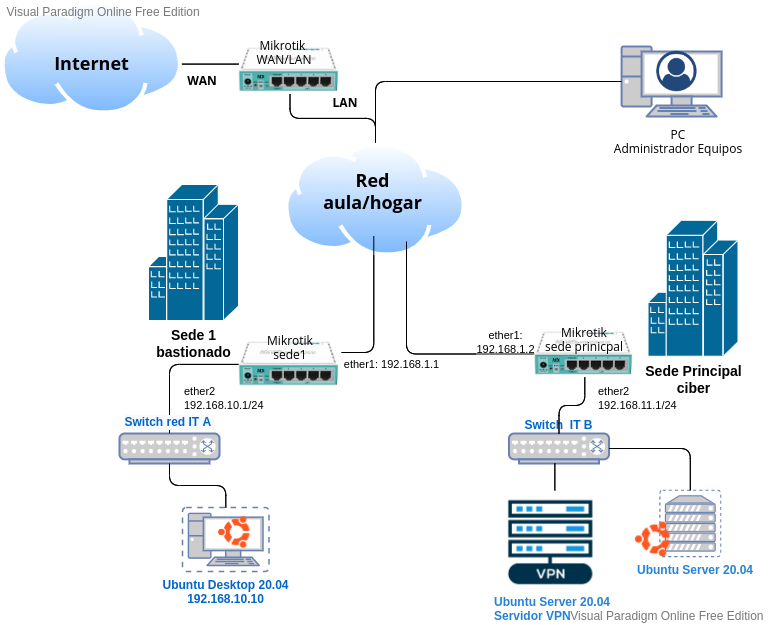
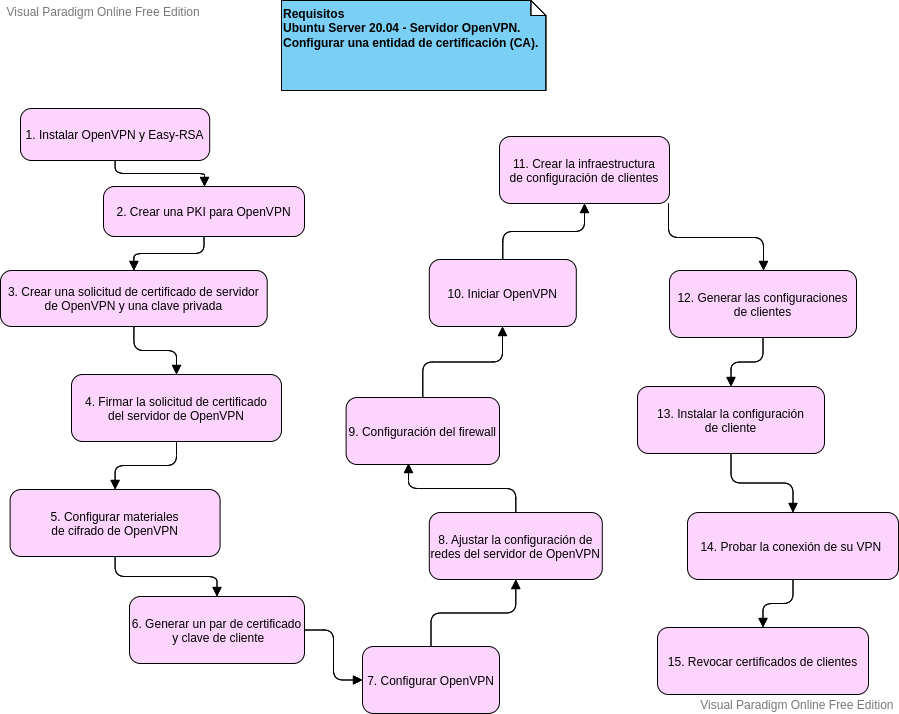

2.1 OpenVPN
1. Introducción
OpenVPN es una implementación de VPN que hace uso de los protocolos SSL/TLS para establecer un canal cifrado.
2. Instalar y configurar un servidor de OpenVPN en Ubuntu 20.04
El escenario donde se tiene que integrar el servidor OpenVPN es el siguiente:

En el siguiente enlace, se describe el proceso de cómo instalar y configurar un servidor de OpenVPN en Ubuntu 20.04. En el siguiente diagrama, se identifican los pasos a seguir.

En la guía de instalación y configuración del enlace, se utilizan certificados de una PKI que hay que crear o reutilizar de las creadas en prácticas/proyectos anteriores. Hay que tener en en cuenta que los certificados de cliente se deben generar para usuarios y no para equipos.
En el Paso 7 se puede aplicar una configuración opcional para que todo el encaminamiento se produzca a través de la VPN.
Si no se fuerza a que todo el tráfico vaya por la VPN, se deberá indicar al cliente una ruta para que pueda llegar hasta la red interna. Para ello, hay que añadir al fichero de configuración del servidor OpenVPN una línea que diga: push "route 192.168.100.0 255.255.255.0".
Obra publicada con Licencia Creative Commons Reconocimiento No comercial Compartir igual 4.0